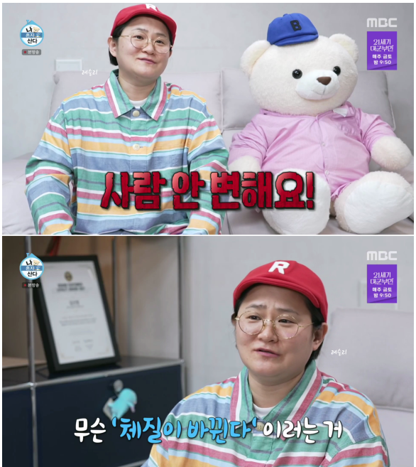
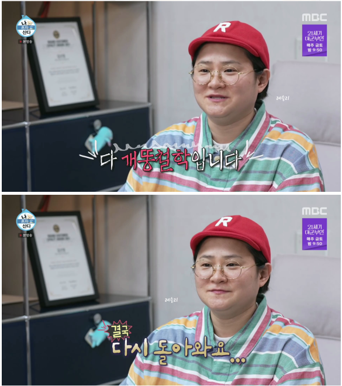
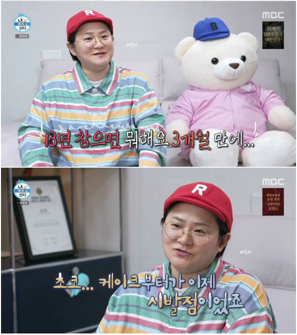
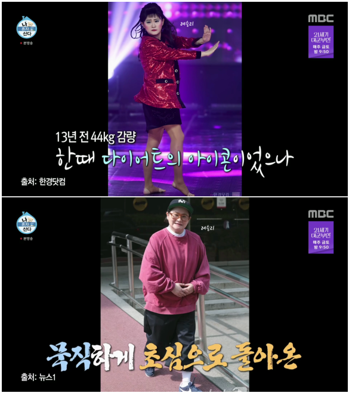

정상체중인이 긴장을 늦췄을 때 5~10kg 정도가 찐다면
전 돼지들은 긴장을 늦추는 순간, 걍 단위가 다름;;;;;;;;
정상체중을 유지하기 위해 필요한 노력의 양이 존나게 다름;;;;;;;;




정상체중인이 긴장을 늦췄을 때 5~10kg 정도가 찐다면
전 돼지들은 긴장을 늦추는 순간, 걍 단위가 다름;;;;;;;;
정상체중을 유지하기 위해 필요한 노력의 양이 존나게 다름;;;;;;;;
저녁 곱배기로 처묵하고 설거지하는 도중에조차 뭔가 먹고싶다는 느낌이 든다는걸 홀쭉이들은 평생 모르겠지
배가 죤나 빵빵레후라 한입 더하면 터져서 없어질거같은 기분과 저거 한개 먹고싶다는 기분이 공존함

나도 피자라지한판에 스파게티 조지고 윙봉 조지고나서'아 씨발배불러....' 하고 '우읍' 하면서 한참있다 입맛 싸악 돌오와서 뭐주면 먹을 수 있음ㅋㅋㅋㅋㅋㅋㅋㅋㅋ
살뺐다고 살쪘을때처럼 먹으면 돌아가게 되어있음
그거 아니라고 아구통 교수가 그렇게 말해도 꾸역꾸역 말하는애들이 있구나
?? 맞는데 뭔 개소리
살빼도 살쪘을때처럼 먹게 뇌에서 시키는거라 이겨내기가 힘들다고한건데
언제 아구통이 안처먹어도 살찐다그랬음?
ㅅㅂ 니는 뭐 물만 마셔도 살찌는 그런 체질이냐?ㅋㅋㅋ
필요 칼로리 이상 먹으면 당연히 찌지ㅋㅋㅋㅋ
열역학을 무시할라고 하노 ㅋㅋㅋㅋㅋㅋㅋㅋㅋㅋㅋㅋㅋ
애초에 칼로리라는 개념 자체가 기계의 동력을 계산하던 단위였는데 그걸 인체에 그대로 들이민 거야... 니 말대로면 쯔양은 열역학을 부정하는 외계 문명인이냐?
소화흡수율이 낮은거임 쯔양은
먹어도 안찌는게 아니라 먹은거에서 애너지를 효율적으로 못뽑아 내는거라고
너 자신을 특별하다고 생각하지마라ㅎㅎ
넌 그냥 먹은만큼 살찌는거임
쯔양정도면 부정하는게 맞는거같다 ㅋㅋ
178cm 65kg인데 오늘 점심때 스시 4점먹고 배불러서 끝냄
난 반대로 긴장을 늦추면 바로 빠지는데 멸치 시절로 안돌아가려고 평생 버둥거리는중. 항상성이 무섭긴하다
나도 그럼 ㅋㅋ 운동 관두고 식사 좀 대충챙기면 쭉쭉빠짐
부럽당 내 유전자 좀 가져다아아악
와 근데 진짜 유지 오래 했다 13년이면....난 1년 반도 못버텼는대
라면먹어도 공룡안되겠구나 휴
이게 일반 사람들이 먹는량의 절반 정도를 먹어야 유지가 되는건데
그걸 꾸준히 한다는건 사람과 어울리는거 자체를 포기해야 한다는거라서 어디 갇혀서 지내는거 아니면 진짜 힘듬.
일반사람이 먹는양의 절반 x 평소먹는양의 절반o
일반인처럼 먹으면 되긴하는데 그럼 돼지로서 존나 허함
아님 내가 군대에서 뺏을때 그렇게 먹으면서 40키로 정도 뺐었는데 일정 체중 되니까 그렇게 먹어도 안빠지는 시기가 옴.
그상태로 전역하고 복학전까지 사람이랑 만날일 없어서 집밥이나 일하는데서 스스로 뜨는곳에서 조절하고 지내다
복학 후에 모여다니는 사람들이랑 다니면서 학식이나 식당에서 1인분이라고 해서 주는거 그대로 먹으면서 몸 점점 돌아옴.
니가 그렇다고 다 똑같냐?
병신.
잘가고
병신. 나와 다른경우를 예시로 안가져오고 시비부터 터는게 병신이 아니면 뭘까?
그건 니가 다이어트를 잘못한거임
왜 보디빌더들이 다이어트 중간에 치팅데이 하는지는 아냐?
치팅데이를 해야 우리 몸이 "아 이새끼 그래도 좀 먹긴 하는구나"하고 신진대사량을 안떨구거든
그래야 계속 살이 빠지는 거임
니처럼 초절식 다이어트만 하면 걍 조지는거임
대부분 무식하게 하니까 똑같이 먹어도 살찐다는 소리가 나오는거고
운동도 같이 병행해서 아령운동은 왠만한거 다 하면서 지냈지.
누가 먹는것만으로 2년에 40을빼
그리고 2주마다 먹고싶은거 먹었지. 많이 먹진 않았고.
평소먹는양이 아니라 1인분의 절반씩을 먹어야 빠짐 1인분 먹으면 절대 안빠지고 유지만 됨
씹돼지들이 다 3인분 4인분씩 먹는게 아님
난 내가 돼지고 왜 내가 돼질까 생각해보면 기상후부터 잘때까지 입에 뭔가 달고있어서 그렇거든
점심식사때 식판에 일반인과 비슷한양을 받는다고해도 그거먹은뒤에 저녁때까지 입에 과자든뭐든 씹고있음
일반인처럼 오후3시정도에 과자한봉 느낌정도가 아님. 대충 40분에 한봉씩 쳐먹고있음
저녁식사때도 일반인처럼 먹어도 결국 야식전까지 뭔가 계속먹다가 야식을 배부르게 먹음
허한걸 참지못하고 뭔가 차있는느낌을 유지하는건데
내가 먹는양의 절반이 야식,간식이라 이걸 다 없애야 일반인과 동급임
나도 씹돼지임 난 좋아하는건 콜라 하나 뿐이고 다른 과자나 빵같은 군것질은 1주일에 한번정도 밖에안함 배달음식도 안시켜먹음 야식도 안먹음
20대 초반때는 음식을 아예 안먹고 코카콜라만 1주일 내내 먹은 적도 있음
액상과당 이빠이 든 콜라를 하루에 3~4리터를 처먹을때도 115키로 펩시제로로 바꿔서 하루에 3~4리터를 처먹을때도 115임
단순히 1인분만 먹어서 빠졌어야 하면 제로로 바꿨을때 액상과당 칼로리가 빠진만큼은 빠졌어야 함
그래서 돼지들은 생각보다 더 많이 줄여서 먹어야 빠지는거고
누가 그얘긴 하더라
사람은 원래 태어난대로 사는거라서
존나 조절하지 않으면 원래 타고난 대로 된다고
그래서 어떤애는 긴장풀면 살존나찌고 어떤애는 홀쭉이 되는거라고...
그것도 유전자에 각인되어있는거라더라
먹고싶은거 참으면 되잖아 < 이렇게 말하는 사람들은
평생 돼지들이 느낀 식욕을 느껴본 적 없음.
그냥 성에 관심 없는 여자애들이 야동 왜보냐고 남자들 질타하는거랑 같아
먹고싶은거 참고 야동보고싶은거 참으면 되잖아?
13년해도 저렇게 금방 돌아가버리는데 뭐식단 어쩌고 나는 노력으로 이러는거보면 아구통의사 이해가 된다
점심 먹고나서 저녁 생각함.
씹돼지 원시회귀 리바운드를 막는 수단이 있다
그것은
@@하체를 존나 조진다@@
것도 하체중 허벅지를 조오온나게 조지면 된다
왜냐고? 우리 신체중 근육의 반절 혹은 7할까지도 비율을 차지하는게 허벅지거든?
근육량은 뭐다? 기초대사량
기초대사량이 높으면 뭐다? 높으면 살이 덜찐다
반대로 씹멸치들또한
힝구힝구 멸치로 돌아가기싫어요 하는데
이또한 답은 허벅지 근육이다
이유는 모른다 씹돼지가 어찌 멸치의 일에 관여하리오
그렇다는 이야기만들었다
이래서 갑자기 살빼거나 소아비만으로 시작했는데 아슬아슬하게 체중 유지하는 사람들이 스쿼트를 존나 재밌어함
근육은 호르몬이나 장기가 하는 일 못이긴다.
근육도 존나 잘 빠지는 체질도 있고.
기초대사량은 뒤지지 않기위한 대사량인데 멸치나 보디빌더나 200칼로리 정도밖에 차이 안남
이게 왜 그러냐면 인간은 독특하게 에너지가 부족하면 근육을 녹여서 에너지원으로 사용함 이렇게 적응하고 진화해왔어서 지금도 그렇게 유지되고 있는거임
가끔 운동 5년 10년 했는데 몸이 안큰다 하는 애들도 다 주 에너지원인 탄수화물을 적게 먹는 식단으로 운동을 해서 그런거임 당연히 근육운동을 해도 에너지가 부족해서 다시 근육을 녹여서 에너지로 쓰는데 클 리가 있나
그러면 왜 운동하면 칼로리 대사량이 늘어난다고 하는거냐
그건 활동대사량임 운동 중량은 근육을 키우기 위한 수단이지만 활동대사량은 얼마나 많이 움직여서 에너지를 사용했냐임
고강도로 짧게 움직이는건 그냥 근육을 키우는거라 에너지소모가 상대적으로 덜함 살빼려면 유산소 즉 활동대사량을 끝까지 끌어올려야 함
돼지들이 리바운드를 막으려면 최소한 하루에 몇시간씩은 유산소를 조져야 함 근육운동은 따로
근데 사실상 그렇게 조질 시간이 없으니까 그냥 식단 평생 하라는 소리가 나오는것
닥찟찌 한덩이 머글래오?
와 13년이나 유지했음 진짜 존나 노력하긴했다
금연이나 금주로 보면 되는거네 의지로 잠시 이겨낼 순 있어도 방심했다간 다시 손대고 평생 끌고가야 되는거
다만 개인적으로는 비만 정도면 단순 꼴초라 보고 이미지상 안좋아도 사람 차이다 싶긴 하지만 고도비만이면 폐암 걸리고도 담배 찾는 급이라 그정도면 평생동안 하더라도 이겨내라라는 말밖에 못하겠다
배부르면 안불편한가 엄청 괴로운데
정상체중들은 모른다니까요
난 80키로 에서 더 나아가본적은 없지만
놓으면 100까지 찔것을 알기에 항상 양껏 못먹는다
의지충들 등장예정
배 부르면 너무 힘들어. 전신에 쥐가 나는 느낌. 적당히 먹으면 좋아.
5~10kg도 일반적이라기엔 많지않아??
트레이너들 상술임 평생 운동 업으로 한 운동선수들도 은퇴하고 손 놓으면 돼지몸 되는거 한순간인데 일반인이 근육 꼴랑 몇kg 는다고 찌는 체질이 안찌는 체질로 바뀔 것 같았으면 ㅋㅋㅋ.. 그냥 다이어트는 평생 가져가야 하는거